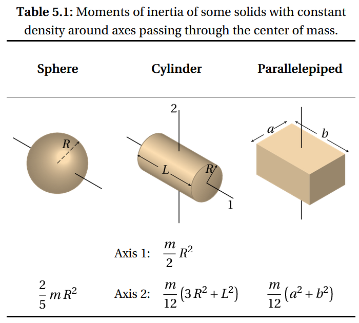

Transmision e Inercia
Inercia

Bloque de transmision
<transmission name="trans_<tu_junta>">
<!-- A. Tipo de transmisión -->
<type>transmission_interface/<NombreTipo></type>
<!-- B. Sección de la junta URDF -->
<joint name="<tu_junta>">
<hardwareInterface><NombreInterfaz></hardwareInterface>
</joint>
<!-- C. Sección de actuador(es) -->
<!-- Para Simple y Reduction: un solo actuador -->
<actuator name="motor_<tu_junta>">
<hardwareInterface><NombreInterfaz></hardwareInterface>
<mechanicalReduction>1.0</mechanicalReduction>
</actuator>
<!-- Para Differential/FourWheel: varios actuadores -->
<!--
<actuator name="motor_izquierdo">
...
</actuator>
<actuator name="motor_derecho">
...
</actuator>
-->
</transmission>
-
<type>selecciona el comportamiento de mapeo -
<joint>enlaza el nombre de la junta URDF con la interfaz de control -
<actuator>define cada motor, su interfaz y la relación de reducción mecánica
Interfaces de Hardware
Cada sección
- PositionJointInterface → comandos de posición (ángulo)
- Qué hace: Permite enviar un objetivo de posición (ángulo) al controlador.
- Usarla en:
- Articulaciones de robot donde quieres especificar directamente la posición final.
- Control de trayectoria
- VelocityJointInterface → comandos de velocidad
- Qué hace: Permite enviar un objetivo de velocidad (rad/s o m/s).
- Usarla en:
- Sistemas de transmisión diferencial como las ruedas en un robot móvil.
- EffortJointInterface → comandos de esfuerzo/torque
- Cuando el lazo de control se basa en torque.
- Usarla en:
- Cuando el lazo de control se basa en torque (manipuladores con control de fuerza como pulido, atornillado, etc).
- Aplicaciones de interacción humano-robot.
Descripción general de los tipos de transmisión
| Nombre del tipo | Caso de uso |
|---|---|
transmission_interface/SimpleTransmission |
Mapeo uno a uno entre junta ↔ motor |
transmission_interface/DifferentialTransmission |
Dos actuadores que mueven una junta (ej. robot diferencial) |
transmission_interface/FourWheelDifferentialTransmission |
Cuatro actuadores, dos diferenciales virtuales |
transmission_interface/JointReductionTransmission |
Junta con reducción mecánica integrada |
transmission_interface/ActuatorTransmission |
Sólo actuador (sin junta URDF asociada) |
Ejemplos
Primero declaramos nuestro Joint
<joint name="joint1_base" type="revolute">
<parent link="base_link"/>
<child link="link1"/>
<origin xyz="0 0 0" rpy="0 0 0"/>
<axis xyz="0 0 1"/>
<limit lower="-${pi}" upper="${pi}" effort="10" velocity="1"/>
</joint>
Transmision Simple
Conducción directa, 1 junta ↔ 1 motor:
<transmission name="trans_joint1_base_simple">
<type>transmission_interface/SimpleTransmission</type>
<joint name="joint1_base">
<hardwareInterface>PositionJointInterface</hardwareInterface>
</joint>
<actuator name="motor1_base">
<hardwareInterface>PositionJointInterface</hardwareInterface>
<mechanicalReduction>1.0</mechanicalReduction>
</actuator>
</transmission>
Transmision con reduccion
Si la junta ya incluye una caja de engranajes interna
<transmission name="trans_joint1_base_reduction">
<type>transmission_interface/JointReductionTransmission</type>
<joint name="joint1_base">
<hardwareInterface>EffortJointInterface</hardwareInterface>
<!-- reducción mecánica integrada en la junta -->
<mechanicalReduction>5.0</mechanicalReduction>
</joint>
<actuator name="unused">
<!-- opcional en este tipo -->
<hardwareInterface>EffortJointInterface</hardwareInterface>
</actuator>
</transmission>
Transmision Diferencial
<transmission name="trans_diff_drive">
<type>transmission_interface/DifferentialTransmission</type>
<joint name="virtual_steer">
<hardwareInterface>VelocityJointInterface</hardwareInterface>
</joint>
<!-- motor izquierdo -->
<actuator name="left_wheel_motor">
<hardwareInterface>VelocityJointInterface</hardwareInterface>
<mechanicalReduction>1.0</mechanicalReduction>
</actuator>
<!-- motor derecho -->
<actuator name="right_wheel_motor">
<hardwareInterface>VelocityJointInterface</hardwareInterface>
<mechanicalReduction>1.0</mechanicalReduction>
</actuator>
</transmission>
Transmision Diferencial 4 llantas
Cuatro motores en dos diferenciales
<transmission name="trans_4wd_diff">
<type>transmission_interface/FourWheelDifferentialTransmission</type>
<joint name="virtual_steer_front">
<hardwareInterface>VelocityJointInterface</hardwareInterface>
</joint>
<joint name="virtual_steer_rear">
<hardwareInterface>VelocityJointInterface</hardwareInterface>
</joint>
<actuator name="front_left_motor">
<hardwareInterface>VelocityJointInterface</hardwareInterface>
<mechanicalReduction>1.0</mechanicalReduction>
</actuator>
<actuator name="front_right_motor">
<hardwareInterface>VelocityJointInterface</hardwareInterface>
<mechanicalReduction>1.0</mechanicalReduction>
</actuator>
<actuator name="rear_left_motor">
<hardwareInterface>VelocityJointInterface</hardwareInterface>
<mechanicalReduction>1.0</mechanicalReduction>
</actuator>
<actuator name="rear_right_motor">
<hardwareInterface>VelocityJointInterface</hardwareInterface>
<mechanicalReduction>1.0</mechanicalReduction>
</actuator>
</transmission>
Actuador no ligado
Cuando modelas sólo el actuador sin una junta URDF asociada